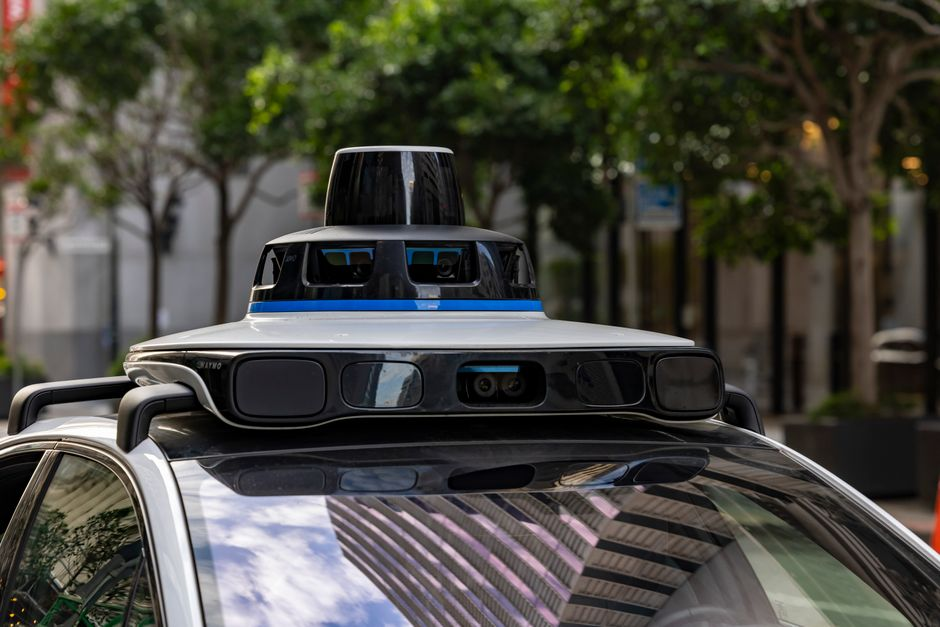

Imagine a world where cars drive themselves, navigating bustling city streets, highways, and even narrow lanes, all without a human touching the steering wheel. Sounds like science fiction, right? Well, what was once confined to futuristic movies is now rapidly becoming a reality, thanks to incredible advancements in robotics and artificial intelligence. Autonomous vehicles, often called self-driving cars, are revolutionizing how we think about transportation, promising safer roads, less traffic, and a whole new level of convenience. For us here in India, where traffic can be quite the adventure, this technology holds immense potential to transform our daily commutes and logistics. Let's buckle up and take a deep dive into the fascinating world of self-driving technology!
What are Autonomous Vehicles?
At its core, an autonomous vehicle is a car or any other mode of transport that can perceive its environment and navigate without human input. Think of it as a robot on wheels, equipped with a sophisticated "brain" that allows it to make decisions, react to situations, and reach its destination safely. These vehicles aren't just fancy cars; they are complex autonomous systems that integrate hardware (sensors, actuators) with software (AI algorithms, mapping, control systems).
While we often use "self-driving" and "autonomous" interchangeably, it's helpful to know there are different levels of autonomy:
- Level 0 (No Automation): The human driver does everything.
- Level 1 (Driver Assistance): Features like cruise control or lane keeping assist, where the car helps with one task.
- Level 2 (Partial Automation): The car can handle both steering and acceleration/braking simultaneously (e.g., adaptive cruise control with lane centering), but the driver must remain attentive.
- Level 3 (Conditional Automation): The car can drive itself under certain conditions (e.g., on highways), but the driver must be ready to take over if prompted.
- Level 4 (High Automation): The car can drive itself completely within a defined operational design domain (ODD), like a specific city area, and doesn't require driver intervention in that domain.
- Level 5 (Full Automation): The car can drive itself anywhere, anytime, in all conditions, just like a human driver. This is the ultimate goal!
Most vehicles on the road today are at Level 0-2. Companies are actively testing and deploying Level 3 and 4 vehicles in various parts of the world, pushing us closer to a fully autonomous future.
The Brains Behind the Wheels: How Self-Driving Cars Work
So, how do these intelligent machines actually see, understand, and navigate the world around them? It's a marvel of engineering that combines various technologies.
Sensing the World: The Eyes and Ears
Just like humans use their eyes and ears, autonomous vehicles rely on a suite of advanced sensors to gather information about their surroundings. This is their primary way of perceiving the environment.
-
LiDAR (Light Detection and Ranging):
Imagine sending out millions of tiny laser pulses and measuring how long it takes for them to bounce back. That's LiDAR! By doing this, LiDAR sensors create a highly detailed, 3D "point cloud" map of the car's surroundings, accurately measuring distances to objects, pedestrians, and other vehicles. It's like having superhuman vision that can precisely map every surface.
-
RADAR (Radio Detection and Ranging):
Similar to LiDAR but using radio waves, RADAR is excellent at detecting the speed and distance of objects, especially in adverse weather conditions like fog or heavy rain, where light-based sensors might struggle. It's crucial for adaptive cruise control and collision avoidance systems.
-
Cameras:
These are the "eyes" that see the world in colour and detail, much like us. High-resolution cameras are used to identify traffic lights, road signs, lane markings, pedestrians, cyclists, and other vehicles. Paired with powerful computer vision algorithms, cameras help the car understand the context of its environment.
-
Ultrasonic Sensors:
These small, inexpensive sensors use sound waves to detect close-range obstacles, typically used for parking assistance and blind-spot monitoring. They're like the car's "touch" sense for very close objects.
-
GPS (Global Positioning System) & IMU (Inertial Measurement Unit):
GPS helps the car know its precise location on a high-definition map, while the IMU (which includes accelerometers and gyroscopes) tracks the car's orientation, speed, and acceleration. Together, they provide accurate localization and motion tracking.
Making Sense of Data: Sensor Fusion
Having all these sensors is great, but each one has its strengths and weaknesses. LiDAR is precise but expensive; cameras provide rich detail but can be affected by lighting; RADAR works in bad weather but has lower resolution. The magic happens with sensor fusion – combining data from all these different sensors to create a comprehensive and robust understanding of the environment. It's like our brain combining what we see, hear, and feel to form a complete picture of the world.
This integrated data allows the car's "brain" (powerful onboard computers running AI algorithms) to build a real-time, 3D model of its surroundings, identify potential hazards, and predict the movements of other road users.
# Conceptual Python code for sensor data processing
# Imagine these are readings from different sensors
lidar_distance = 15.2 # distance in meters to nearest obstacle
camera_object_detected = "car" # e.g., using object detection models
radar_speed_relative = -5.0 # km/h, negative means approaching
gps_location = (12.9716, 77.5946) # Latitude, Longitude (Bengaluru coordinates)
print("--- Real-time Sensor Data Snapshot ---")
print(f"LiDAR detected object at: {lidar_distance:.1f}m")
print(f"Camera identified: {camera_object_detected}")
print(f"Radar shows relative speed: {radar_speed_relative} km/h")
print(f"Current GPS location: {gps_location}")
# Simple conceptual decision logic based on fused data
# In a real system, this would involve complex AI models
if lidar_distance < 10 and camera_object_detected == "car" and radar_speed_relative < 0:
print("Decision: Obstacle (car) detected within 10m and approaching. Initiating braking sequence!")
elif lidar_distance < 3 and camera_object_detected == "pedestrian":
print("Decision: Pedestrian very close! Emergency stop initiated!")
else:
print("Decision: Path appears clear, continue driving as planned.")
This simple code snippet illustrates how different sensor inputs are gathered and how a very basic decision might be made based on combining these pieces of information. Real autonomous systems use far more complex algorithms, including machine learning and deep neural networks, to process this vast amount of data and make split-second decisions.
The Decision Maker: Path Planning and Control
Once the car understands its environment, the next step is to decide what to do. This involves:
- Localization and Mapping: Knowing exactly where the car is on a highly detailed map and continuously updating that map with real-time sensor data.
- Perception: Identifying and classifying all objects around the car (other cars, pedestrians, traffic signs, potholes).
- Prediction: Anticipating the movements of other road users. Will that pedestrian cross? Will the car in front change lanes?
- Path Planning: Calculating the safest and most efficient path to the destination, avoiding obstacles, obeying traffic laws, and considering comfort.
- Control: Executing the planned path by sending commands to the car's actuators – steering, accelerator, and brakes – to maintain speed, stay in lane, and navigate turns smoothly.
"Autonomous vehicles aren't just about cars driving themselves; they are about creating intelligent, responsive systems that can enhance safety, efficiency, and accessibility for everyone."
Autonomous Driving in India: Challenges & Opportunities
Bringing self-driving technology to a diverse and dynamic country like India presents unique challenges and exciting opportunities.
Challenges:
- Diverse Traffic Conditions: India's roads are known for their mixed traffic (cars, bikes, auto-rickshaws, pedestrians, animals), often with unpredictable movements.
- Infrastructure: Lack of clear lane markings, inconsistent road signs, and varying road quality (potholes, unpaved sections) can challenge current autonomous systems.
- Human Behaviour: Drivers often don't strictly adhere to lane discipline or traffic rules, making prediction more complex for AI.
- Regulatory Framework: Developing clear laws and regulations for autonomous vehicles is crucial for their safe deployment.
- Public Acceptance: Building trust and acceptance among the general public will be key.
Opportunities:
- Reduced Accidents: Human error is a major cause of accidents. Autonomous systems could significantly reduce collisions and save lives.
- Improved Traffic Flow: Optimized driving patterns and communication between vehicles could lead to less congestion and faster commutes.
- Enhanced Accessibility: Providing mobility solutions for the elderly, disabled, or those unable to drive.
- Logistics and Public Transport: Revolutionizing freight delivery, public buses, and last-mile connectivity.
- Economic Growth: Creating new jobs in R&D, manufacturing, and service sectors related to autonomous technology.
Getting Started with Autonomous Tech: Your MakerWorks Journey
The field of autonomous vehicles is exploding with innovation, and the best part is that you don't need to be a seasoned engineer to start exploring it! At MakerWorks, we believe in hands-on learning that sparks curiosity and builds foundational skills.
You can begin your journey by:
- Learning to Code: Python is a fantastic language for robotics and AI. Start with basics and move to libraries like OpenCV for computer vision.
- Exploring Robotics Kits: Many kits allow you to build and program small autonomous robots that can follow lines, avoid obstacles, or even navigate simple mazes.
- Understanding Sensors: Experiment with ultrasonic sensors, IR sensors, and cameras with microcontrollers like Arduino or Raspberry Pi.
- Participating in Workshops: Join MakerWorks workshops to learn about AI, machine learning, and robotics in a practical, engaging environment.
- Reading and Researching: Stay updated with the latest developments in autonomous technology.
Conclusion
Autonomous vehicles are not just a futuristic dream; they are a testament to human ingenuity and the power of STEM education. From the intricate dance of LiDAR beams to the complex decision-making of AI algorithms, every aspect of self-driving technology is a blend of physics, engineering, computer science, and mathematics. As this technology continues to evolve, it promises to reshape our cities, improve safety, and open up new possibilities for transportation in India and beyond.
Are you ready to be part of this exciting future? The journey into robotics and autonomous systems starts now! Head over to the MakerWorks courses page to explore our programs and workshops. Let's build the future, one robot at a time!